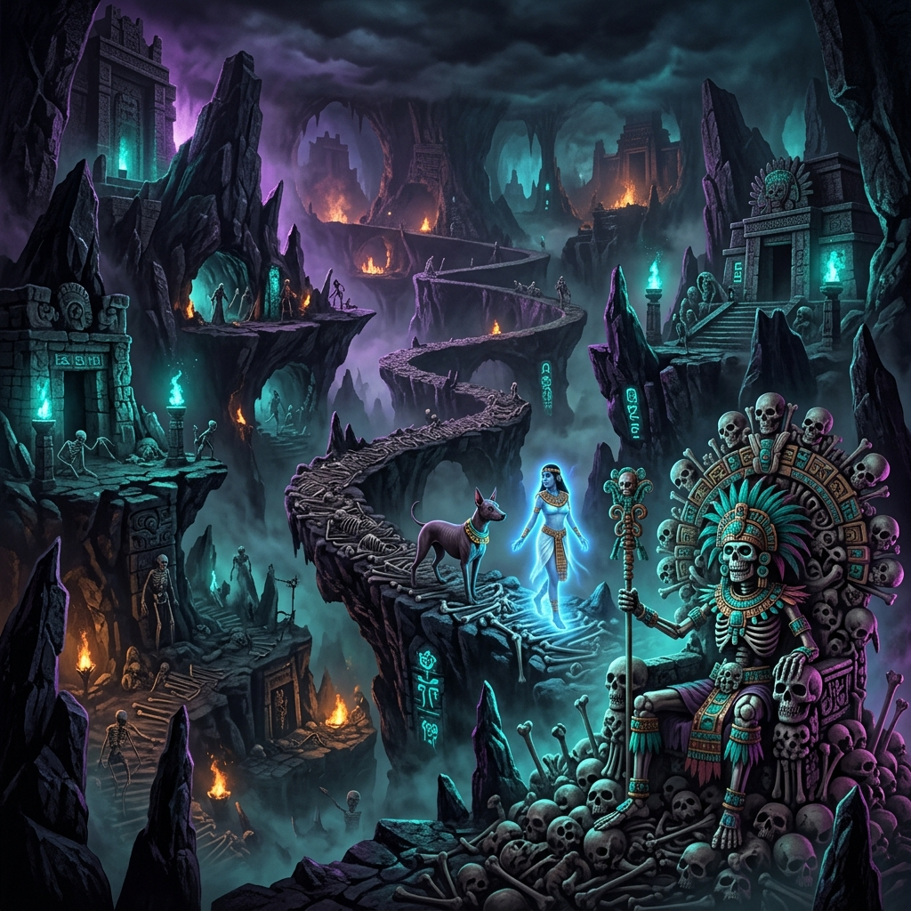
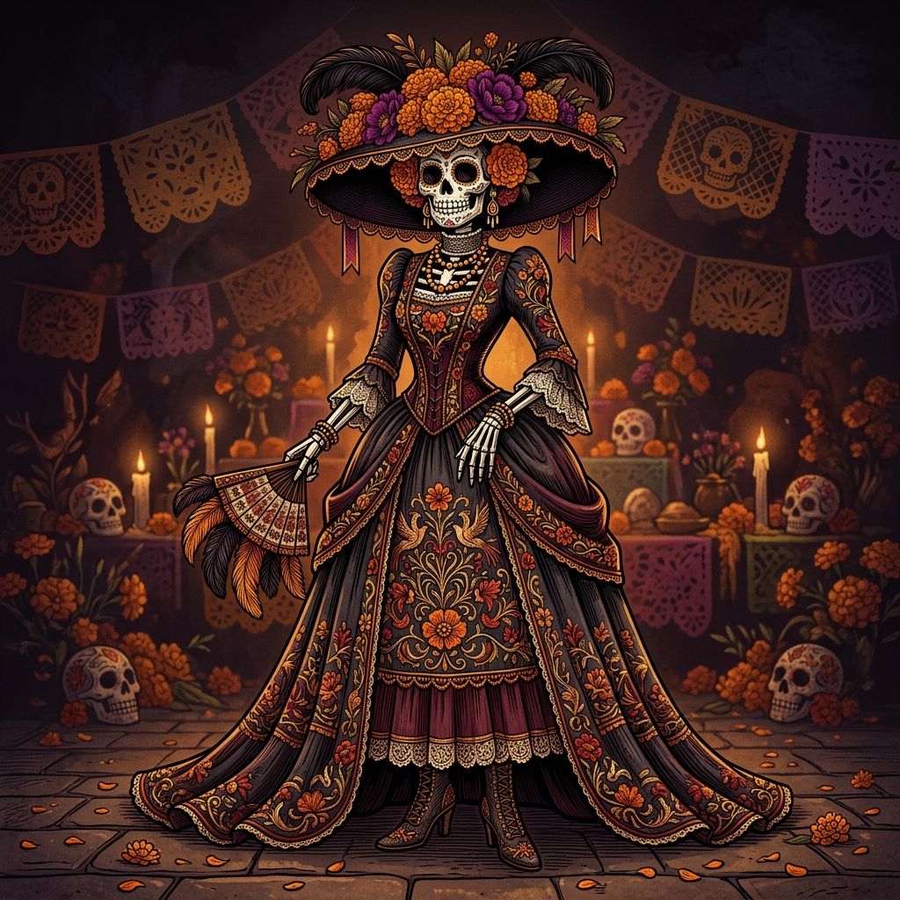

Donde la vida y la muerte entrelazan su danza,
en un abrazo eterno tejido de esperanza.
Período Prehispánico
El Viaje al Mictlán y el Guía Fiel
Nueve niveles de sombras el alma debía cruzar,
ríos, vientos y flechas, para al fin descansar.
Mictlantecuhtli y Mictecacíhuatl, señores del gran salón,
esperaban con paciencia la eterna comunión.
Para cruzar el caudaloso río Apanohuacalhuia, el difunto necesitaba la guía incondicional de un perro Xoloitzcuintle. Si en vida el humano había sido cruel con los perros, el Xolo se negaría a ayudarle, dejando su alma vagar eternamente. Solo el respeto hacia la naturaleza garantizaba el paso. En los nueve estratos del Mictlán, los muertos perdían gradualmente su cuerpo y sus pasiones terrenales, fundiéndose finalmente con el universo.

Siglo XVI
El Sincretismo Colonial
Con cruces y con incienso llegaron de ultramar,
y antiguas creencias tuvieron que adaptar.
La flor de cempasúchil se unió a la oración,
naciendo en esta mezcla, una nueva tradición.
Durante la colonia, la evangelización española fusionó las fiestas agrícolas mexicas (celebradas en verano) con el calendario católico europeo. Así se instituyó el 1 de noviembre (Día de Todos los Santos), dedicado a las almas puras de los niños, y el 2 de noviembre (Día de los Fieles Difuntos), destinado al retorno de los adultos. La sangre fue reemplazada por dulces de alfeñique y pan de trigo.
Siglo XIX y XX
Posada y la Sátira Inmortal
En huesos la Garbancera presumía su sombrero,
olvidando sus raíces por un falso abolengo.
Posada con su buril plasmó un crudo misterio:
rico o pobre, terminas en el cementerio.
El ilustrador José Guadalupe Posada creó un grabado en 1910 llamado "La Calavera Garbancera". Fue una dura crítica social a los vendedores de garbanzo, de sangre indígena, que renegaban de su raza y vestían ropas finas a la usanza francesa. Décadas después, el muralista Diego Rivera la vistió elegantemente en su obra Sueño de una tarde dominical en la Alameda Central, bautizándola como "La Catrina", el símbolo definitivo de la muerte mexicana.

Siglo XXI
Patrimonio de la Humanidad
Al mundo entero deslumbra nuestra colorida ofrenda,
donde la vida no acaba, sino que se enmienda.
En el año 2003, la UNESCO proclamó esta celebración como Obra Maestra del Patrimonio Oral e Inmaterial de la Humanidad. Se reconoció que el Día de Muertos en las comunidades indígenas mexicanas no es solo una fecha de luto, sino un acto de memoria, identidad comunitaria y resistencia cultural.